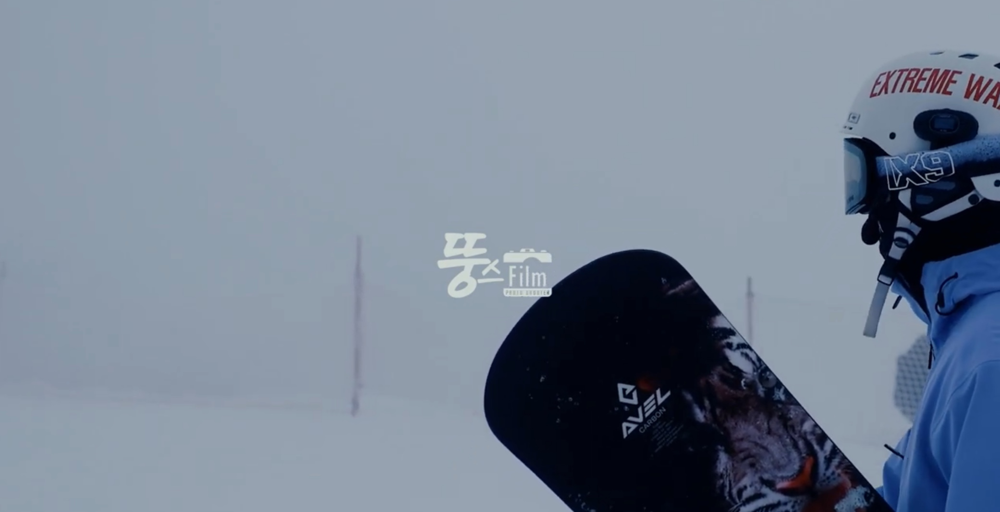
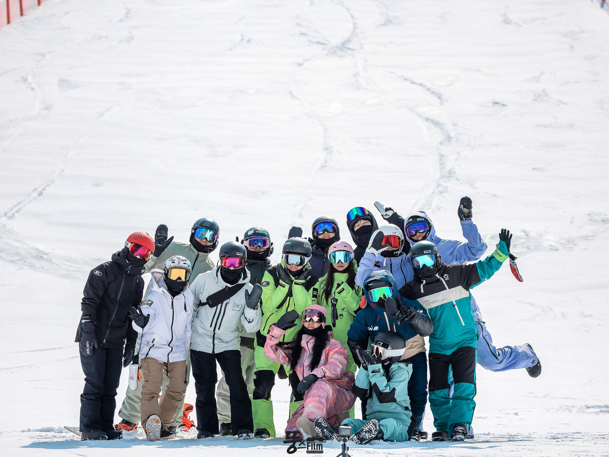
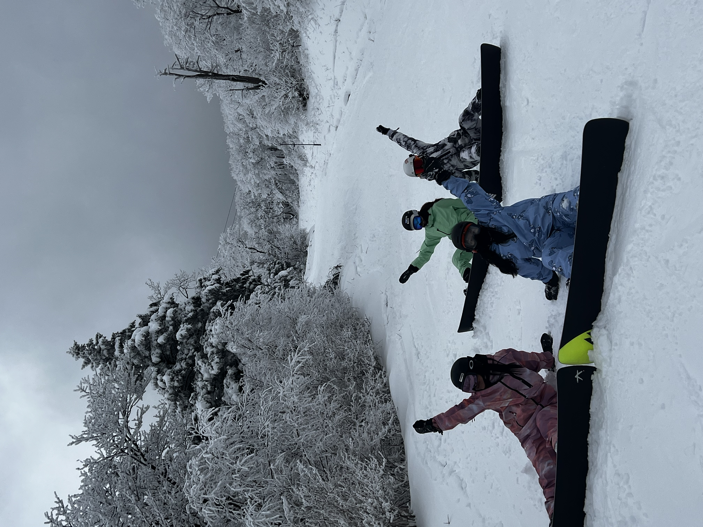

For Winter
SnowBoard
미국에서 만든, 긴 널빤지로 눈언덕에서 미끄러지며 노는 도구. 사냥꾼들이 눈 덮인 산을 타며 내려오기 위해 고안했다고 하며, 초기에는 발과 보드를 묶는 바인드가 없이 발을 널빤지에 올려놓은 상태에서 널빤지에 달린 끈을 붙잡아 몸을 지탱하는 형태였다. 우리나라의 썰매도 어쩌면 스노보드에 해당할지도 모른다.
점점 스포츠화되며 발전하다가 1980년대부터 현재와 비슷한 형태의 데크(흔히 보드라고 부르는 널찍한 판)가 보급되어 정착되고, 스키장 내의 스노보드 사용이 허가되면서 스노보딩을 즐기는 사람들이 크게 늘기 시작했다.
전향각 프리라이딩
세계적으로 많은 보더들이 프리스타일보드, 덕스탠스를 채택하는데, 한국과 일본같이 강설(딱딱한 눈)에서는 전향각 라이딩을 채택하는 보더들이 존재한다. 전향각 라이딩은 보다 큰 퍼포먼스 그리고 궁극적으로 급경사에서 안정적인 카빙턴을 하기 위한 스탠스이다.
스키장 리스트
한국의 주요스키장
- 휘닉스파크(강원도 평창)
- 하이원리조트(강원도 정선)
- 용평리조트(강원도 평창)
- 비발디파크(강원도 홍천)
일본의 주요스키장
- 시가 고원 스키장(나가노)
- 조에쓰 국제 스키장(니가타)
- 니세코 도큐 그란 히라프(홋카이도)
평창 휘닉스파크
-
11월 말쯤부터 가장 추운곳인 대관령(강원도 평창 용평리조트)를 시작으로 하나 둘씩 스키장이 오픈하며 시즌의 시작을 알린다. 보통 설질이 좋지않고, 슬로프도 초,중급만열며 보더들의 몸을 푸는 시간
-
12월 중순쯤 되면 거의 모든 스키장이 오픈하며 본격적인 시즌의 시작이다. 겨울만 바라보며 살던 사람들의 축제의장이 시작된다.
-
가장 날씨가 추운, 보드 특히 전향각라이더들이 가장 좋아하는계절, 스키장의 눈이 딱딱해 강한 엣징을 구현하며 본인들의 트릭을 뽐내는 시간이다.
-
영하였던 날씨가 점차 영상으로 바뀌고 눈이 녹기시작하며 시즌을 보내줄 준비를 시작한다. 차마 시즌을 보내주지 못하는 보더들은 마지막까지 용평, 하이원리조트 같은 그나마 추운 스키장으로 원정을떠나며 끝까지 질척인다.
11월
12월
1월~2월
3월
해외 원정
보더들은 3개월이라는 짧은 시즌과 9개월이라는 길고긴 비시즌이 있는데, 겨울을 바라보며 시즌을기다리다 지친 사람들이 해외원정을 떠나곤 한다, 비시즌에도 보드를 탈 수있고, 한국과 달리 정말 드넓은 스키장 슬로프를 맛볼 수 있다는게 최대 장점이며, 단점으로는 금액이 많이 비싸다
해외원정 가격(왕복&리프트권&숙소) 4박 5일기준
| 국가 | 스키장 | 가격 |
|---|---|---|
| 루마니아 | 포이아나 브라쇼브 | 약 350만원 |
| 일본 | 니세코 그랜드 히라후 | 약 200만원 |
| 뉴질랜드 | 코코넛피크 | 약 300만원 |
| 불가리아 | 반스코 리조트 | 약 330만원 |
| 뉴질랜드 | 퀸즈타운. | 약 400만원 |
국내 최다 슬로프, 아름다운 설경 하이원리조트(High1 Resort)
2324시즌 경채 추억

하이원리조트는 총 20층 이상의 강원랜드 호텔, 컨벤션호텔, 하이원호텔과 마운틴콘도, 밸리콘도, 힐콘도로 총 6개의 숙박시설을 보유하고 있다. 하이원리조트는 골프, 스키, 보드, 카지노 등 오락과 스포츠를 한 곳에서 즐길 수 있는 기회를 제공해준다. 가족과 연인 모두 즐길 수 있는 공간이 된다, 또한 하이원리조트에서는 정선, 영월, 태백, 삼척이 모두 가까워 숙박은 하이원리조트에서 하고 여러군데를 관광하는 것도 좋은 여행방법이다.하이원스키장은 다른 스키장과 비교하여 고도가 높고 기온이 낮아 아름다운 설경이 연출되고는 하는데, 이를 일본의 니세코 스키장에 빗대어 하세코스키장이라는 별명이 붙을정도로 설경이 이쁘다.